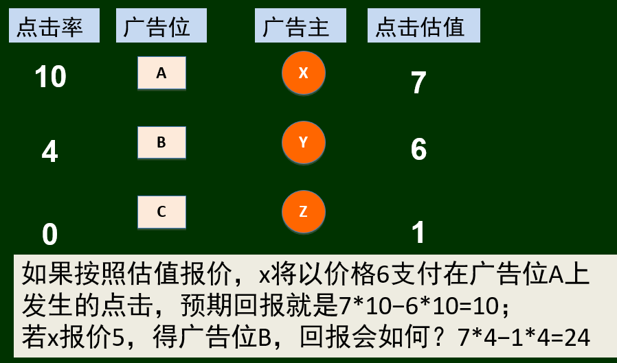
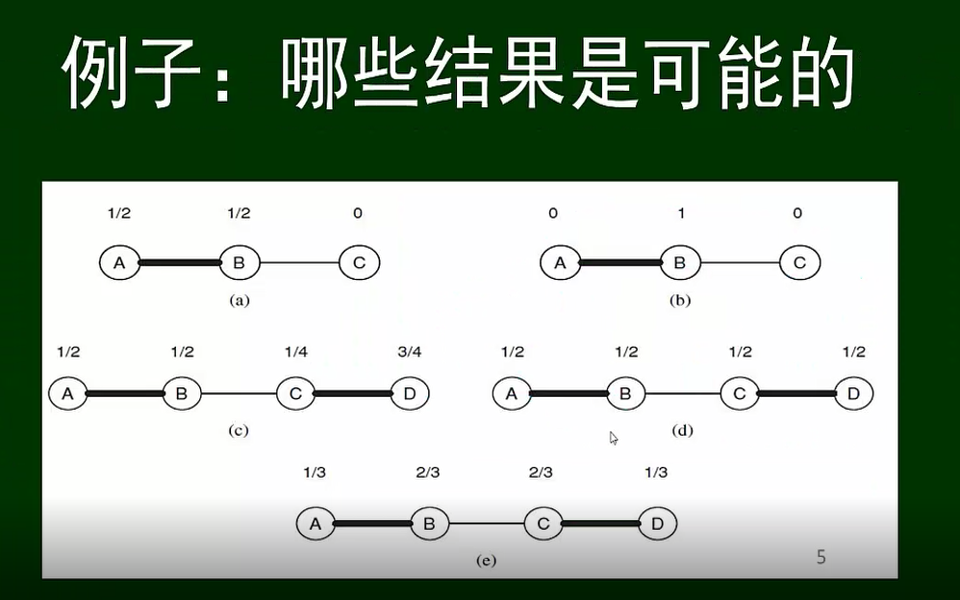

众智-博弈论
博弈论基础
基本概念
参与人（player，玩家）
策略集（Strategy，战略）
回报（payoff，受益）
策略组：每个参与人出一个策略构成的策略组合
例如：
- 收益矩阵：表达博弈的一种直观方式
博弈中的行为推理
首先，假设参与人关心的是自身的最终收益。
其次，还假设每个参与人对博弈结构具有充分信息。 这意味着参与人都知道他／她自身的可能策略集。
最后，进一步假设每个个体策略的选择都是为了达到自身收益的最大化，假定他／她也知道其他参与人也会选择收益最大化的策略。 有关个体行为策略模式，通常被称为是理性化模型，且个体行为模型实际上结合了两种观点。
一是每个参与人都想要自已受益的最大化。因为个体收益被定义为是个体最在意的，这种假设看起来合理。
二是每个参与人实际上都会选择最优策略。在简单的设置背景下，假设博弈中的参与人都是有经验的，这似乎就更加合理。 在复杂博弈中，或者博弈中的参与人是经验比较少的，则确实是不够合理。
基于上面的假设，当无论其他参与人选择何种行为策略时，都会存在一个决策是最佳选择，则定义这个策略是严格占优策略 (strictly dominant strategy) 。当任意参与人有一个严格占优策略，则可以预期参与人会确定地选择它。
比如：囚徒困境。
假设有两个疑犯被警察抓住，分开关押。
警察强烈怀疑他们和一个抢劫案有关，但证据还不足。然而，他们都拒捕的事实也是可判刑的。
两个疑犯都被告知以下选择及其后果:
“如果你坦白，而同伙抵赖，则你马上释放，他将承担全部罪行，会判刑10年。如果你们都坦白，你们的罪行将被证实。但由于你们有认罪的表现，都判刑4年。如果你们都不坦白，那么没法证明你们的抢劫罪，但我们将以拒捕罪控告你们，都判刑1年。你的同伙也正在接受这样的审讯。你是坦自还是抵赖?”
最佳应对与占优策略
最佳应对与严格最佳应对
最佳应对即是参与人的最好选择。 最佳应对以假设参与人考虑到其他参与人将有的行为策略集为前提。
假设S是参与人1的一个选择策略，T是参与人2的一个选择策略。 在收益矩阵中的某个单元格对应这策略组。 我们用表示参与人1从这组决策获得的收益，表示参与人2从这组决策获得的收益。 现在，针对参与人2的策略T，若参与人1用策略S产生的收益大于或等于任何其他决策，则称参与人1的策略S是参与人2的策略T的最佳应对。
即：。其中是参与人1除S外的其他策略集。 自然地，对于参与人2，也有完全对称的定义。
值得注意的是，在最佳应对定义中，参与人1可能存在不止一个策略，都是策略T的最佳应对。 于是，很难预测参与人1究竟会在多个最佳应对策略中的具体选择。 有时需要强调最佳应对的唯一性，即假设S会产生比任何和策略T相对应的其他策略都较高的收益，则参与人1的策略S是对于参与人2的策略T是严格最佳应对。
占优策略与严格占优策略
我们从最佳应对角度定义严格占优策略的概念：
- 参与人1的占优策略，是指该策略对于参与人2 的每一策略都是最佳应对。
- 参与人1的严格占优策略，是指该占优策略对于参与人2的每一策略都是严格最佳应对。
在上一节中，我们发现，假设参与人有严格占优策略，则就可以预期他／她会采取该策略。 占优策略概念也有小的不足。 因为抗衡其他对立策略时， 占优策略可能是一组最佳选项。 自然地，参与人可能会有多个潜在的占优策略。 在这种背景下，具体选择某个占优策略就不易预测。
纳什均衡
当参与人在双人博弈中都无严格占优策略，则需要通过其他方式来预测什么行为倾向于在实际中发生。
假设存在两家公司，彼此都希望和A、B、C三个大客户之一洽谈生意。每家公司都有三种可能的策略：是否找客户A、B或C。他们决策的结果具体如下：
假设两家公司都找同一个客户，则该客户会给每个公司一半的业务。
公司1规模太小，以至千不能靠自身找到客户源。所以，只要它和公司2分别寻找不同的客户洽谈生意，则公司1获得的收益将会是0。
假设公司2单独寻找客户B或C洽谈生意，则会得到客户B或C的全部业务。但是A是一个大客户。寻找客户A洽谈生意时，必须和其他公司合作才能接下业务。
因为A是一个大客户，和它做生意收益价值是8（假设两家公司合作，则每家公司会得到收益是4)。但是，和B或C做生意的收益价值是2（如果合作，则每个公司收益是1)。
我们研究该博弈中的收益，会发现两家公司都无占优策略。事实上，每家公司采取的策略都是另一家公司采取的某一策略的严格最佳应对。对于公司1而言，如果公司2选择A， 则它的严格最佳应对也是选择A；如果公司2选择B，则它的严格最佳应对也是选择B；如果公司2选择策略C，则它的严格最佳应对也是选择策略C。从公司2角度考虑，当公司1选择A，则它的严格最佳应对是选择A；当公司1选择策略B，则它的严格最佳应对是选择策略C；当公司1选择C，则它的严格最佳应对是选择策略B。
理性来讲，(A,A)对参与人来说互为最佳应对，我们可以推断这是博弈的最终结果。
定义纳什均衡
即使不存在占优策略，我们也可以通过参与人彼此策略的最佳应对，来预测参与人的策略选择行为。更准确地说，假定参与人1选择策略S，同时参与人2选择策略T。若S是T的最佳应对，同时T是S的最佳应对，则称策略组(S,T)是一个纳什均衡。
这并非从参与者的理性行为中可以推导出来，这是一种均衡概念。均衡的观点就是，假设参与人选择的策略彼此间都是最佳应对，即具有相互一致性。在组备选策略中，任何参与人都没有激励动机去更换一种策略。所以系统处于一种均衡的状态中。
纳什均衡可以被看做是一种信念上的均衡如果每个参与人都相信另一方在博弈中实际会采取一个纳什均衡的部分策略，则他／她就有动机采用达成这个纳什均衡中的另一部分策略。
两种发现纳什均衡的途径。 一是简单的核查所有的个体策略集，寻查它们中的每一项是否是彼此间策略的唯一最佳应对策略；二是计算每个参与人对千对方每个策略的最佳应对，然后发现互为最佳应对的策略组。
多重均衡
一般来说，纳什均衡有助于缩小预测范围，但不一定能给出唯一预测。有时会出现两个或多个纳什均衡，比如协调博弈与鹰鸽博弈等。我们很难预测哪种纳什博弈会被采取。
混合策略
有很多博弈不存在纳什均衡，但博弈仍然存在均衡。比如硬币配对博弈（一种零和博弈）
两个参与人各持一枚硬币，同时选择显示彼此手中硬币的正反面。正面记为(H)，反面记为(T )。假如他们硬币的朝向相同，参与人2将赢得参与人1 的硬币。反之，则参与人1将赢得参与人2的硬币。
在硬币配对博弈中，首先应注意到：不存在一组策略彼此是最佳应对。证实该点，可观察任一组策略，其中一参与人可能会得到收益-1。当然，该参与人可以通过切换策略提高他（或她）的收益到+1。所以，对千任一组策略，都存在一个参与人想改变自己的行动策略立
这意味着，假设我们仅认为参与人彼此仅有两个策略H和T，则该博弈不存在纳什均衡。如果我们考虑硬币配对是怎样运行，这也毫无奇怪。纳什均衡要求，即使给定有关彼此策略的充分信息，参与人也没有动机改变一个可替代性的策略，即在纳什均衡中，参与人具有相互一致性，这体现在信念和行动上。但在硬币配对中，假如参与人1知道参与人2将选择特定的H或T，则参与人1 可以通过选择对方策略的对立策略来获得收益+1。类似的推理也可把握参与人2的行为。
当我们在直观上思考该类型的博弈是如何在真实生活中演绎时，所看到的将是，参与人通常会试图迷惑对手，让对手难以预测他们将有什么策略行为。它暗示着，在类似硬币配对的博弈模型中，我们不应只把策略当成是简单的H或T，还应注意到参与人在H和T选择中行为的随机性。对于这类博弈中的行为，现在我们知道该怎样把它们构建成一个模型。
混合策略基本概念
实际上每个参与人都不是直接选择H或T，相反的，参与人选择依据的是概率，即概率表示她选择策略的机会大小。 所以，在该模型中，参与人1的可能策略是数字 p，p 介于0~1。 给定的数字p是指当参与人1以概率p选择H；以概率1 - p选择T。 同样的方法，参与人2的可能策略是数字q，q 也介于0~1，它代表参与人2选择H 的概率。
我们注意到，通过放开随机化条件， 这个博弈不再由每个参与人的两个策略构成。 相反，他们的策略是表示概率 的区间[0,1]中的数。 我们称它们为混合策略 (mixed strategies)，因为它们涉及选项组H和T间的 “混合”。应注意到这组混合策略仍包括初始的两个选项 H 和T，分别对应概率 1 或 0，在这种博弈中，特别称为纯策略 (pure strategies)（博弈矩阵中给出的选项就是纯策略）。 为了使记号简单些，我们有时用参与人1选择p=1指代纯策略H。
那么我们如何去推测或者说计算p与q的值呢？我们可以计算期望收益。
参与人1选纯策略H：
参与人选纯策略T：
我们将假设参与人寻求收益期望的最大化，而收益期望是基于混合策略的选择。虽然这个期望是一个自然的量，但也有一个微妙的问题，即收益期望的最大化是否是参与人行为的合理模型假设。不过到目前为止，该假设依然是广为接受的，即参与人根据价值的期望对收益的分布进行评价 。所以，在此我们加以沿用。
混合策略的均衡
我们在混合策略类型中定义纳什均衡，就像我们在纯策略类型中定义纳什均衡一样：它是一对策略 （ 现在表现为概率），因此彼此都是对方的最佳应对。
假设参与人1的纯策略H（换言之，概率p=1 )是纳什均衡的一部分，则参与人2唯一的最佳应对可能也是纯策略H（ 因为每当他们的硬币匹配时，参与人2获得收益+1)。但是，参与人1的策略H并不是对应参与人2的策略H的最佳应对策略。 相互矛盾间显现出彼此互动行为的不一致， 所以，实际上这里不存在纳什均衡。 类似推理也可应用于两个参与人之间的其他可能纯策略。 为此，我们可以得到一个很自然的结论：对于任一纳什均衡，两个参与人使用的策略都必须严格介于0~1。
对于参与人2的策略 q，我们计算了预期收益 与 ，现在，这里出现了一个关键点：假如，事实上对于参与人2采取的策略q，则纯策略之一的H或T是参与人1唯一的最佳应对（显然）。 但是，我们已经证明在硬币配对博弈中纯策略不会导致纳什均衡的产生。 因为每当时，纯策略都是最佳应对策略，而概率又使这两个不对等预期都不能成为纳什均衡的一部分。
所以，在有关硬币配对的混合策略类型中，任一纳什均衡存在必有：。（而且，更重要的一点，这个问题是完全对称的，但其实，就算不对称，这一结果依然会成立）
这说明：如果混合均衡是存在的，每个参与人都会进行概率策略的选择，这种选择使得 他／她的对手在两个选择策略间是无差异的。
举例：持球-抛球博弈
进攻方可以选择持球或者是抛球。防御方可以选择拦断持球或者选择防守抛球。下面是收益情况。
- 假设正确阻断进攻方的持球行为，则进攻方的收益为 0。
- 假设进攻方选择持球而防守方却选择防守抛球行为，则进攻方的收益为 5。
- 假设进攻方选择抛球，同时防守方却选择拦断持球，则进攻方的收益是10。
正像硬币配对出现的情况一样，当参与人彼此采取纯策略时，这个博弈便很容易检测到有没有纳什均衡。双方都需要通过随机性确定他们各自的非预测行为。所以，让我们尝试找出这个博弈中的混合策略均衡：假定p 是进攻方抛球的概率，q 为防守方防守抛球的概率（我们可以从纳什的主要结论得知，至少存在一个混合策略均衡。但是，p和q不对应实际价值）。
博弈论应用
布雷斯悖论
布雷斯悖论（英语：Braess’s paradox）是1968年由德国数学家迪特里希·布雷斯提出的一个悖论，它是指在一个交通网络上增加一条路段反而使网络上的旅行时间增加；这一附加路段不但没有减少交通延滞，反而降低了整个交通网络的服务水准。
这一悖论在电网和生物系统中也有相似的例子。理论上，在一些情况下，去除网络的一部分可能可以改善网络。这一悖论可以解释现有主要道路关闭后交通反而改善的例子。这种出力不讨好且与人们直观感受相背的现象主要源于纳什均衡并不一定使社会最优化。
拍卖
英式拍卖（English auction）
- 拍卖品以一个较低的保留价格开始竞价
- 竞标者开始喊价增长，通常以拍卖师设定的最小增量进行
- 竞标者一旦停止加价，即没有人愿意出更高价
- 最高出价者中标，并支付出价
荷兰拍卖（Dutch auction）
- 拍卖品以一个高价开始拍卖
- 拍卖品不断降价直到有人愿意出价
- 拍卖品以最后的价格分配给第一个出价者
密封式拍卖（sealed-bid auction）
维克瑞是密封式拍卖，即所有竞拍人提交他们的报价放入一个密封的盒子。竞拍人互相看不到彼此的报价，由拍卖师确定中标者和需要支付的价格。
在first-price auction中，出价最高的人中标，并支付他的出价
在second-price auction中，出价最高的人中标，并支付出价第二高的人的出价
- 维克瑞拍卖行和英式拍卖具有战略意义（Strategy-proofness），这意味着没有动机去操纵。
次价密封拍卖问题
如果你获得了交易权。此时，你有正的回报
- 提高报价不会改善回报;
- 降低报价，若不低于第二个人的，也不会改善回报，若低于第二个人的，则失去了交易权，回报变成0（减少了)
- 也就是说，不会愿意提高报价，也不愿意降低
如果你没有获得交易权（有人出价X>100）。此时，你的回报为0。
- 降低报价不会改变现状;
- 提高报价，若不高于第一个人的报价，也不会改善回报，若高于第一个人的，你赢得交易权，但要支付原来第一个人的报价(高于你的估值)，于是回报为负（减少了)
- 也就是说，不会愿意提高报价，也不愿意降低
那么这种拍卖方式会让所有参与拍卖的成员按照心理预期估价进行报价。
匹配问题
受限组
由于存在受限组，所以我们无法形成完美匹配，解决匹配问题，其实就是要消灭受限组。
利用市场机制解决匹配问题
对于左侧的买卖价格，对于买家x，x对a的估值与其价格差价为10（也就是说x买a会觉得自己赚了10块钱），x对b的估值与其价格差价为1，x对c的估值与其价格差价为4，那么为了达到心理预期的最大利润，x会选择a。
依次类推，y的估值与三件产品差价相同，所以y会选择三件中的任意一件。同理，z会选a。
那么，此时有三个买家同时选择了a，我们要找到一种方案，达到合理分配。
为此，我们对a加价，再去审视三个买家对三个货物的选择。看是否存在合理分配。
关于匹配的进一步问题
形成清仓价格的算法过程为什么总能结束？
对于我们如下的算法
也即：
给定买方估值，卖方从初始价格（
0,0,…,0）开始，按照轮次进行下述操作：- 构造偏好卖家图
- 识别是否存在买方受限组（
S）
若没有，则偏好卖家图中存在完美匹配，结束。
否则，将受限组对应的卖方集合
N(S)中的价格都+1。（也就是根据需求调整价格，“物以稀为贵”）。若因此使所有卖方价格都>0，则统一约减最低价至0。开始下一轮。（注：统一约减不影响偏好卖家图关系）
那么，为什么不会来回“震荡”，始终得不到存在完美匹配的偏好卖家图？
定义市场的势能：所有参与者潜在回报之和
卖方(
j)：当前价格，；买方(
i)：“估值减去对应价格”的最大值，
那么，初始时， 恒成立（初始值都是0）：
我们如果能说明在上述算法过程中：势能每一轮单调减，但总不会小于0。则就说明了过程一定结束。“结束”＝“无受限集”。对于过程中的势能，有如下证明：
设买卖双方各有
K人，观察势能在每一轮的变化，可见只有价格 的变化会引起势能的变化（因为买家的预期价格是不变的）。在操作过程中有两处可能会引起 的变化:
必定发生：因受限集
S造成的N(S)中元素（也就是所有出价 ）价格+1不一定发生：统一约减 至最小价格为0
可见:
卖方势能之和，由于（1）增加
N(S)（更准确的说，是N(S)集合的个数），由于（2）减少K
- 但总保持是
≥0买方势能之和，由于（1）减少
S（更准确的说，是S集合的个数），且S>N(S)（所以会单减），由于（2）增加K注：
- 如果我们认为每次约减都统一将所有 减一，那么买卖双方分别增加/减少价格为
K（即，一共K个商品都进行了减一操作）- 为什么
S>N(S)：回顾受限组的概念，或者更直观地，供不应求。结果也总是
≥0（因为v≥0，且算法过程保证了总存在一个a=0）。于是市场势能在每轮都单调递减，且下界为0。而且，由于S中的节点比N(S)中的多，拍卖的势能下降得比上升的多至少一个单位，于是整个势能至少下降一个单位。
这样，说明了在拍卖的每一轮，势能至少降低一个单位。 也就是说，拍卖从某个势能值 开始，并且不可能低于0，于是它一定会在 轮以内结束，我们得到市场清仓价格。
清仓价格为什么导致社会最优的配置？
我们有这个关系：
当有清仓价格时，说明偏好图中存在完美匹配，那么每个买家都可得到在该价格下的最大差价，也就是最大，那么必定有 最大。
广告
首先确定最基本的模型：
互联网公司－主要靠出售网页上的广告位生存
广告主－对每一次来到自己电子商务网站的点击给自己带来平均收入有个估值
互联网公司给出每个广告位的“点击率”（例如每小时几次），供广告主估计广告位的价值＝点击率＊点击估值，即单位时间里可能带来的平均收入。互联网公司可先算出每个广告位的价格，通过点击率转换成点击价格，向广告主收取广告费用。
如何给广告位定价？
首先：
不同的广告位点击率不同，于是广告位本质上价值是不同的
不同的广告主的点击估值不同，意味着对广告主同一个广告位的估值不同
也就是说，对于每个广告位，每位广告主都有一个价值估价，这就是一个匹配市场，如果我们知道广告主的估值，就可以给出广告位的社会最优价格（市场清仓价格）。
我们要明确以下概念（公式）：
那么，按照匹配市场运行机制，将广告位价格从0开始，依供需关系调整（提高），直到形成完美匹配。
样例

注意这个匹配的特殊形式。可以证明，在由点击率和点击估值确定的估值矩阵情形，按照点击估值的高低配置对应的广告位达到社会最优。也就是说，这个完美匹配的对应形式不是偶然的。
特定完美匹配形式的证明
有n个广告位（），n个广告主（），
每个广告位有一个点击率，，，假设
每个广告主有一个点击收入估值，，假设
形成一个对广告位的估值矩阵：，其中，
断言，在如此估值矩阵下，对应匹配市场的社会最优配置方案一定是 匹配给 。
我们使用反证法证明这个断言：
不失一般性地，设 没有和 匹配而是和 匹配（
i>1），那么一定有 被 匹配（j>1），此时这两个匹配对社会福利的贡献（估值和）是（）。现在考虑交换这两个匹配的效果（其他匹配关系都不动），即让 和 匹配， 和 匹配，此时这两对匹配对社会福利的贡献是（）。
如果我们能看到后者的贡献要大，即，就够了。
注意到估值矩阵的生成规则，点击率和点击收入分别的序关系，我们有：
证毕
广告位的拍卖问题
我们知道，在单品拍卖中，次价拍卖是鼓励参拍者真实报价的。但现在面对的是“多个物品”要与相同数量的买主同时匹配的问题，如果采用次价拍卖方式，应该是个什么规则？
GSP: Generalized Second-Price Auction
设
n个广告位，按点击率 ，递减排列n个广告主，对每个点击有不同的出价，递减排列，
沿着“次价拍卖”的自然思路
- 将 分给第一个广告主，按 收取点击费
- 将 分给第二个广告主，按 收取点击费
- …
- 将 分给第 个广告主，收取某个门槛点击价格（可以是0）
GSP下的广告主心态分析
其实每广告主心里对点击有一个估值 ，（注，它们不一定有递减顺序）
问:
这种规则鼓励“说实话”吗？
广告主有没有可能通过故意让他的
b和v不一致而获得更多的好处？- 即：能买到广告位，且“估值−价格”比较大
我们已经证明，在单品次价拍卖中，竞拍者没有动机让 v 和 b 不一样。
现在拿出来拍卖的物品多于一个了（同类但不同质），若A的价值比B高，但A的价格也比B高，一个人也许会选择买B，觉得“更加值”，即有，；但，。也就是说，交易能带来更大利润。
例如：
这说明，在多个商品同时拍卖的情形，如此推广的一种次价拍卖规则（GSP）没有单品次价拍卖（鼓励真实报价）的优良性质
针对问题的改进：VCG
单品次价拍卖规则：
设
n个参与人，出价按照降序排列，出价 者中标，支付价格 ，其他人没交易
支付价 的一种含义：补偿给由于中标者的出现给其他人（集体）带来的价值损失。如果没有第一个人的出现，其他人会得到什么？得到一件价值为 的物品
也就是说，让每个人支付的价格等于他的出现对其他人造成的价值损失总和。具体来说：
按照出价的高低，将广告位（按点击率递减顺序）分给广告主。
对于广告主
X，他的支付价格如下确定
- 设，在该匹配中，其他人的出价总和为
Σ1- 从广告主集合中去掉
X，其他人按照出价形成新的最优匹配（对应一个新的出价总和Σ2）
Σ2−Σ1就是X要支付的价格（VCG价格）
如：
VCG价格机制的优良特性
鼓励“讲真话”：按照真实估值出价是每个竞拍者的占优策略
- 即没有理由故意让出价偏离估值（无论别人如何出价）
- 换言之，大家都按照估值报价是一个纳什均衡
社会最优：买方估值总和最大
- 按照机制执行的定义，当大家都“讲真话”时，所得到的广告位分配就是估值总和最大的
我们要证明这些特性。
特性的证明
令S为卖方（广告位）集合，B为买方集合
表示在所有可能的买卖双方匹配中对应的最大估值（出价）总和。
进而，若 i 为某个卖方，j 为某个买方，则S−i 和B−j表示相应的少一个元素的集合。从而
表示在所有可能的买卖双方匹配中，买方集合除去买方
j后对应的最大估值（出价）总和表示在所有可能的买卖双方匹配中，买方集合除去买方
j，卖方除去i后对应的最大估值（出价）总和
用 表示买方j 得到商品i应付的VCG价格，有：
我们要证：如果j采用真实报价且按此 支付，则他没有理由改变报价。
设广告主
j真实报价获得广告位i，他得到的回报就是现设他通过改变报价，被匹配到不同的广告位
h≠i，得到的回报是是否有
且
那么我们只需证明：
注意 是整体最优匹配的一部分，即，左边有
但对于右边， 是在不同于
i的h固定之后的最大估值之和，也就是说，或者说，我们在调整价格后会达到新的在所有可能的买卖双方匹配中对应的最大估值（出价）总和，，显然
关系间的权力
什么是权力
社会学对权力的探讨
- 经典的权力定义（Weber）：迫使他人服从自己意志的能力
Richard Emerson（1962）：
- 权力是有关系性的
- 不能单独说某人有权力，而应该是说在什么关系中，某人更有权力
样例讨论
现在每条边上有10元钱，相关的两个人要商议如何进行划分（每人都想得到尽量多，当然！）
商议的过程通过纸条进行（可以来回多次）
每个人只能和自己的网络邻居商议（提出自己的要求）
每人最终只能最多与一个邻居达成协议；因此一旦在某个边上达成了协议，就告知另外的邻居（不要再议了）
整个过程进行5分钟，时间到则强行终止，达成协议的按照协议分钱，没达成协议的节点收益为0（无论是时间到终止还是被邻居“抛弃”）
对于（1），显然，均分是最可能的方案，双方都没有动机改变这一结果。
对于（2），显然，D有更大的权力。（有更多的选择）
对于（3），B和C有更大的权力，但显然不如（2）中的D大
对于（4），B、C、D权力要大，而且B、D权力大于C，但相对（3）来说，每个人的权力更小了，大只是相对于其他节点。
结果
结果的定义
给定一个图，“结果”是其中的一个匹配（一个节点无冲突的边子集），以及每个节点在[0,1]区间的一个赋值，满足：
- 如果节点
u和v对应匹配中的一条边，则它们赋值之和为1 - 如果节点
u不涉及到匹配中任何边，则它的赋值为0
示例中，上面两个是结果，下面两个不是。
博弈、权力与结果、稳定结果
对于（a）和（b），显然（b）更可能
对于（c）（d）（e），显然（e）更可能，（d）其次
对于其他结果，都存在改变这一结果的趋势，也就是说，这些结果是不稳定的。
稳定结果(stable outcome)
不稳定因素:不在结果中的一条边，其两端节点的价值之和小于1
稳定结果:不存在不稳定因素的结果
纳什议价解(Nash Bargaining Solution)
讨论两个节点之间的权力关系，可将网络中其他部分的影响归结为一个“外部选项”
类似于“谈判底线” ，即人们不会同意达不到外部选项的谈判结果或者说有“一定退路”。
是节点在网络中地位的一种集中体现
比如：
首先，如果谈判破裂，A的收益是0.4（A的退路、底气），B为0.1
那么对于这个谈判，余地其实是0.5，因为两方的底气加起来为另0.5。那么A和B如何分这0.5？答案是均分，显然。这样对于这个谈判，A的收益应该是0.25+0.4=0.65，B的收益是0.25+0.1=0.35。
为什么谈判余地是0.5？因为另0.5已经由双方的底气固定了，同时双方对于剩下的另0.5都没有获取更多的底气，均分显然是更好的方案。
理论化：纳什议价解
假设网络中两个节点的外部选项可以量化为x和y，在关系上$1划分的预期结果如何?
规格化:
纳什的理论结果：双方满意于均分 $s= 1-x-y $
对于
对于
也与人们的直觉(平分剩余)相符，于是我们可以预计实验的结果应该与它近似。
几何理解
我们用二维图像进行表示，黄色的点代表一个（x,y），其对应的解（a,b）都在直线上。
给定（x,y），能否找出其对应的（a,b）？
对于给定的 ，我们其实发现他们加上 就是对应的 ，那么我们过点 做 的平行线，与 的交点就是对应的 。如图：
纳什议价解与稳定结果
下面三个结果都满足稳定结果，但是否都是纳什议价解？未必。
对于（a），外部选项是0.5，A和B均分0.5，那么A应该是0.25，B应该是0.75，所以（a）不是纳什议价解。
同理，（b）是，（c）不是。
平衡结果
于是，给定一个结果，我们可得到每一个节点的外部选项，进而可以根据结果中节点的赋值算得匹配中每条边上的交换是否满足纳什议价解。
平衡结果(定义)：结果中匹配的每条边上的价值划分都满足纳什议价解。
平衡结果一定是稳定结果。稳定结果其实是在看是否存在不匹配边，而平衡结果是保证所有匹配的边都满足纳什议价解。
可以证明，有稳定结果的网络中一定有平衡结果。
但是
人们观察到，在一些极端情况下纳什议价解与实验结果经常不符。
回顾稳定结果的意义：排除了破坏一个谈判的外部因素，但没有充分考虑由于结构地位的不同，谈判双方权力的差别在价值分配上的影响。
纳什议价解是在一个关系上，考虑了外部选项因素后，双方议价的均衡，一个节点在网络中的结构地位的不同可以看成是外部选项的不同。
从众与流行
从众：信息级联模型及理论
个人的决策受到信息不透明的影响，从而导致信息级联现象，即从众。
实验
有两个罐子，一个罐子中有两个蓝球一个红球，另一个罐子中有两个红球一个蓝球，随机取一个罐子，依次，人们随机从中摸出一个球，只能自己看，然后根据自己的判断向大家宣布判断“蓝多”或“红多”，然后将球放回。
相关理论
条件概率公式
图论和博弈论，还需要一点条件概率：贝叶斯公式
- ：样本空间
- 是 中一个事件
那么，对于事件 ，属于 的概率是：
一个例子
实验本身的概率描述
样本空间：红多罐和蓝多罐，事件：取出红球或取出蓝球
已知的数据（概率）
首先，我们各有一半的概率拿到红多罐或者蓝多罐，即：
然后，取到蓝多罐的情况下，取出蓝球的概率为三分之二，取出红球的概率为三分之一
即：
若取到的是红多罐同理。
案例分析
第一个学生
若拿出了蓝球，现在判断更可能是蓝多罐还是红多罐。
在拿出蓝球的前提下，该罐为蓝多罐的概率是：
所以应猜是蓝多罐，其实这样，后面的人就会猜到你拿到的是蓝球
第二个学生
若拿出了蓝球。
在拿出蓝球且前一个人拿出蓝球的前提下，该罐为蓝多罐的概率是：
所以应该猜蓝多罐，那么相当于告诉别人你拿出了蓝球，因为如果你拿出了红球，猜该罐是蓝多罐的概率是二分之一，你应该相信自己而说是红多罐。
第三个学生
若拿出了红球
在拿出红球且前两个是蓝球的前提下，该罐为蓝多罐的概率是：
仍然猜蓝多罐，但此时，后面的人就无法判断这个人拿到的是什么球。
后面的学生
此时，他们唯一能确定的是，前两个人一定拿到了蓝球，而第三个人不确定，就直接忽略，那么对于后面的所有学生，无论拿到什么球，其处境其实与第三个同学相同，都会认为是蓝多罐，而且他们的声明也不会对其他再拿的人有参考价值。
这时就出现了信息级联现象（其实从第三个人就开始级联了）。
案例结果分析
概率结果取决于什么？
私有信号个数（每个人的宣称）
私有信号数相同时两种概率相同
私有信号多出一个时，相应概率高于1/2
后面的人如何知道前面人的私有信号？
未形成级联时：判断结果和私有信号一致
形成级联时：个体忽略自身信号跟从前人选择
结论
结论1：当一个私有信号比另一个多出2个就会形成级联
结论2：形成级联前后人能够推测前人的私有信号，级联开始后便不能推测
比如：
一种通用模型
某事物以两种状态之一随机出现，好（G）状态与差（B）状态，先验概率分别为 和 。参与人需要根据一定的条件来判断是什么状态出现了，认为是G，就“接受”，否则“拒绝”。如果接受的真是好状态，得回报 ，如果接受了一个差状态，得回报（惩罚） 。如果拒绝，则回报总是0。
应该如何做这种判断（以得到较大回报期望）？且若大家都这么判断，是否会形成级联？
没有额外信息的情况下
假设在没有任何额外信息的情形，接受的回报期望为0，即 。这意味着，如果判断计算出的 ，就应该接受，从而回报期望>0
有信息的情况下
若 ，则判断为G，接收
已知信息：
自己随机探测的结果（给出的信号）
人们基于先前随机探测结果形成的判断（不一定对）
从而，做判断的基础是自己的探测 + 前序参加人的判断结果
假设随机探测给出关于事物状态的两种信号之一：高（H）信号与低（L）信号
- 信号出现的概率取决于状态：如果G状态，则H信号出现的概率 信号出现的概率。若是B状态，则两种信号出现的概率反过来
任务：根据已知信息，判断事物处于什么状态
相应的，问题就转变成了：
求解： ? （其中 称之为私有信号序列）
利用贝叶斯公式，可以证明：
，若S序列中H的个数大于L
，若S序列中H的个数等于L
，若S序列中H的个数小于L
证明之二：一定会产生级联
由前面推理，第 个人的选择如下：
两种信号相同，按 选择
个数相差1，按 选择
个数相差2，忽略自己的信号 ，形成级联
证明：，信号个数相差2的概率为1
也即：证明：当N足够大时，存在连续3个相同信号概率为1
n个信号序列3个一组分组
一组3个信号相同的概率：
没有一组3个信号相同的概率：
随N增大， 趋于0
那么就会出现信号个数相差2的情况
信息级联成因的要素
足够多的参与人
依次决策
部分私有信息（信号）
缺乏明确的公共信息
有限选择（红、蓝；买，不买）
理性决策
非确定性决策问题
如何推理一个决策？
博弈论：参与人，策略，收益
- 参与人策略：占优策略，最佳应对策略
- 组织者/管理者关心：纳什均衡，社会福利
非确定性决策问题信息不明定，参与人有个体信息和有限的集体信息
- 参与人策略：基于已知事件计算未知事件发生的概率，根据概率决策
- 管理者关心：有效地预测、利用、避免信息级联的产生
流行
幂律（power law）分布
社会中大部分人并不活跃。
例如：一定规模的微信群的讨论次数排名
两边取对数：
解释
这种分布的共性是绝大多数事件的规模很小,而只有少数事件的规模相当大. 对上式两边取对数,可知lny与lnx满足线性关系lny= lnc - rlnx,也即在双对数坐标下,幂律分布表现为一条斜率为幂指数的负数的直线,这一线性关系是判断给定的实例中随机变量是否满足幂律的依据。
幂律表现了一种很强的不平等性，对个人收入的分布来说这确实是一件很恐怖的事，但同时也说明了，单纯依据人均收入来衡量两个城市或国家的发展水平，并没有多大的实际意义，必须还要提供一个衡量收入分布不均程度的参数——基尼系数，才能增强比较的可靠性统计物理学家习惯于把服从幂律分布的现象称为无标度现象，即，系统中个体的尺度相差悬殊，缺乏一个优选的规模。可以说，凡有生命的地方，有进化、有竞争的地方都会出现不同程度的无标度现象。
网络的研究过程中，科学家们亦发现了众多的幂律分布，虽然这些网络在结构及功能上是如此的千变万化，相差迥异。复杂网络中节点的度值k相对于它的概率P(k)满足幂律关系，且幂指数多在大于2小于3的范围内；这一现象是如此的普遍，如此地令人惊叹不已，以至于人们给具有这种性质的网络起了一个特别的名字——无标度网络。这里的无标度是指网络缺乏一个特征度值（或平均度值），即节点度值的波动范围相当大。
幂律（power law）的最显著特征就是，等级越高则越不均衡。其数学原理很简单——幂律描述的是这样一组数据，其第n个位置的秩（rank）是第1个位置的秩的1/n。对于一个纯幂律分布，第一位与第二位之间的差距要大于第二位与第三位之间的差距，以此类推。以维基百科的文章编辑为例，你可以料到排名第二的最活跃用户的编辑量只及第一名编辑量的一半，而排名第10的只做了后者的1/10。这也是所谓“80/20法则”背后的形态。
一篇维基百科文章最活跃的贡献者，Flickr上最热衷于为照片添加标签的人，一个邮件组里讲话最多的成员，他们往往都比群体里表现最中间那个人要活跃得多，事实上，由于他们的活跃程度，对“平均”参与的任何测量失去了意义。从少数极度活跃的成员到一大群几乎不活动成员之间是陡峭的下跌，尽管平均值很容易计算，却几乎完全不具代表性。
基本特性
Scale free（无标度**，**不受比例尺度影响的）Scale free函数隐含着自相似（self similarity）
平均行为不反映典型行为
- “典型行为”－经常遇到的；
- “平均行为”－总和／个数
- 正态分布的“平均行为”反映“典型行为”
- 但幂律分布显然不会
Scale Free “无标度” 的含义
一个事物从不同的尺度看，具有相同的形态。
举例：幂函数，对于，这里
以网页流行性分布为例构建一个网页互联简单模型
网页以如下方式创建：
以概率 p，均匀随机地选择一个早先创建的网页，建立一个到该网页的链接。
以概率1-p，均匀随机地选择一个早先创建的网页，建立一个到该网页所指向的网页的链接。
如果p较小，就会更多地建立到该网页所指向的网页的链接，导致富者愈富。
流行度幂率分布的变换形式
设书籍销售量呈幂率分布：
我们计算其累计概率分布，即销量至少为k的书籍种类占比：积分得到一个幂次降低一位的幂函数
xy轴对调：齐普夫定律与长尾理论
， 为流行度排名， 为排名第 位实体的规模
对于上图就会发现，虽然随着销量排名增加，实际销量下降很快，但是根据函数模型，幂律后半段的销量累计其实也很可观，也就是说累计概率分布也不会太低。
新事物的扩散
模型
一个社会网络，A，B两类事物可能被人们采纳；B是“旧的”，一直以来大家都采用B。A是“新的”，开始吸引了几个坚定份子
假设
- 每个人只能采纳A或B之一
- 两个相邻的人若都采用A，则得回报a；若都采用B，则得回报b；若采用不一样的，则回报0
- 在从一种选择换到另一种过程中没有其他成本
定量分析
设 有 个邻居,在某一时刻，若占比 的邻居选 ，占比 的邻居选
选 $A pda$，选 回报：
如果 ，即若 ，则选 好;否则，选 更好。
样例
假设a=b，那么只要p不小于0.5，就会选择新事物A

初始时只有7,8选A，那么第一轮影响，5,10会选A，第二轮，4,9会选，以此类推
也可能存在另一种情况：
比如，上例中1、2、3以及11-17就是这种情况。
刻画阻挡级联的因素一一聚簇
聚簇(抱团)：称一个节点集合为密度为 的聚簇，若其中每个节点至少有占比为 的网络邻居也属于这个节点集合
- 每个节点的好友出现在这个集合中的比例
比如，如果我们认为 是一个聚簇，则其密度为 ，由于d的好友出现占比最低。
聚簇与级联的关系
设网络中一个初用节点集采用 ，剩余网络的其他节点采用 ，且它们改用 的门槛值为
如果剩余网络中包含一个密度大于 的聚簇，则这个初用节点集不能形成 的完全级联
而且，如果一个初用节点集不能形成一个完全级联， 则剩余网络一定包含一个密度大于 的聚簇
证明级联定理
给定槛值 和初用节点集
若剩余网络中存在密度大于 的聚簇，则其中每个节点(B) 都有至少 占比邻居在这个聚簇中，于是谁也不可能被“首先攻破”，完全级联不可能形成
若级联形不成，则剩下的每一个节 点都有大于 占比的邻居 节点都依然采用B，于是它们就构成了一个密度大于 的聚簇
异值门槛网络传播
此处我们引入了其进行改变的门槛值。
阻碍聚簇：级联不能继续的原因。异值门槛阻碍聚族，是剩余网络中的一个节点集合，其中任何节点 都有超过 占比的邻居也在该集合中。
直觉上，能感到这就是阻止传播(或者防止一个节点被感染)的条件。在此定义下，也有类似的形成完全级联的充要条件。即：不能形成完全级联，当且仅当剩余网络存在一个阻碍聚簇。
一个问题：如何选一个初始节点使扩散更快
比如，我们初始选取4，此时1、2、5、6、7都知晓，然后7会选用B，此时8、9会知晓，7的延时是1，以此类推，最后扩散到整个网络。但是，可能存在更快的方案：

信息不对称
前置知识与现实分析
制度（Institution）
为了某种社会目的，人们需要（或者认为需要）遵守的一套行为规范。作为个人（利益攸关方之一），一般会在制度下追求自身利益的最大化（当然，也有利他主义者，舍己为人精神，公益心，大局意识，等等）。作为制度的设计者（也是利益攸关方），希望达到某种全局最优，不希望个人逐利损害制度的初衷，或者出现意想不到的副作用制度的运行对应一些事件和状态的出现，人们在这些事件的出现中进行博弈（策略选择）。
制度下群体行为的两种基本区分
想像人们对一个事件如何发生做判断（预期），以决定采取相应的行动。
外生事件（exogenous）：该事件如何发生与人们的行动情况无关；（比如彩票）
内生事件（endogenous）：该事件如何发生直接取决于人们的行动情况；（比如前面的道路拥堵、拍卖等）
市场与信息
两类市场
如果仅仅考虑参与者的行动对市场动态的影响，或两者之间的互动，则可以将市场划分为两类
外生事件市场：事件发生的概率不受行动者参与行为影响
内生事件市场：事件发生的概率受到行动者参与行为影响
外生事件市场举例
如彩票作为一个市场，无论多少人去购买彩票，彩票的中奖概率，总是相对稳定的值，尽管中奖额度与参与者的数量、进而与奖金池的积累有关。再如选举(大选)作为一个市场，无论多少人参加投票，只会有一个人当选总统，或者一只会有一个政党会成为多数派政党。
内生事件市场举例
布雷斯悖论，如果将交通看做是一个市场，则每个驾驶者的参与会对交通时间产生直接影响。二手车市场，如果人们相信二手车市场的车质量很好，就愿意出好价钱，则二手车市场就真的会有高质量的车出售；卖二手车的人也会将自己质量不错的车卖到二手车市场，反之，如果人们相信二手车市场的车质量很糟，就不愿意出好价钱，则二手车市场就不会有高质量的车出售，卖二手车的人也不会将自己质量不错的车卖到二手车市场。
市场模型抽象
市场失效 ：没能达成成交协议，商品没卖出去。可能本来是有议价空间的，但信息不准，或者估值不准，估值低于底价，导致无法成交。
而且注意到，市场中信息往往是不对称的，买方掌握的信息往往少于卖方。
外生事件市场模型：赛马问题
两匹马：A和B，即将比赛。你有钱数 用于下注，分别投放多少最好？
也就是说，求 ，，用 赌 ， 赌 ，使得回报最大。
还假设
A取胜概率：；B取胜概率：
A取胜赔付率：；B取胜赔付率：
- 赔付率：赌场为赌客正确下注的一块钱需要支付的钱数
于是，要确定 ，使下式最大
显然，后面的式子恒正且与 无关，那么，若 ，则 ，否则 。
举例
。有 ，取 ，所有 全部压到A上
若你有 ，很可能就这么做了，因为一旦A真的赢了，你得到200回报（很好），A输了，也无所谓。
但如果 很大呢？我们不可能这样做。因为还是有较大风险。
风险意识
担心坏事出现带来的损失，宁可放弃一些好事出现带来的利益。而且也可以看到，财富增长带来的“好的感受”随财富量的增加而减少。我们可以对不同于金钱的回报建模。
如何刻画“好的感受”的增长随财富量的增加而减小
效用函数（utility function）
这个函数代表的实际意义就是，薪水从5000涨了1000所带来的好感的变化值要大于薪水从6000涨了1000所带来的好感变化，也就是说，函数是上凸的（函数斜率是递减的）。
我们常用财富效用函数（而不是财富）的期望作为评价投注策略回报的指标，以反映人们感受财富或投资风险的心理。
如果我们取 ，那么体现财富倍增带来的感觉一样，与最初多少无关，也就是说 ，那么效用期望
那么，，令其为0（求极值），则 。
即：投在A上的财富占比最好就等于A取胜的概率。在这样的效用函数下，投注策略与赔付率无关。
赛马场的赔付率（无赔赚运行）
假设对数效用函数，有N个赌客（1,2,…,N）参与，每个人有如下财富和信念参数，并按照各自的信念下注
设赛马场按照“无赔赚”运行，即无论哪匹马取胜，收到的所有赌注（）都给出去,如何确定赔付率（和）？
马场总共收的钱数为 。其中在A和B上的投注量分别是 、 。
如果A取胜，马场要把所有收的钱（）按照一定的赔付率（）都给出去，即 。
那么 ，对称地其实可以求出 。
如果我们取倒数，就会发现
也就是说，赔付率的倒数相当于“单位价格”，即赌客为了得到一块钱回报需要正确下注的钱数
状态价格：群众信念的聚合
对于这个式子： ，我们定义状态价格（单位价格）：赔付率的倒数
- 体现群体对一个选项的信念的聚合，即对每人信念（）的“加权平均”，这个“权”就是一个人的财富在总财富量中的占比（越大，其信念对状态价格的影响就越大）
一个问题：谁的下注策略肯定不亏本？
若大家都按信念下注，且赌场按上述方式计算赔付率，一个人有没有可能，无论哪匹马赢，都拿回自己下注的财富？
可能，若某人对 的信念是 ，对 的信念是 。只要将 的钱投 ，剩下的钱（）投 即可。
例如，A若赢，她就得到（因为 与 互为倒数），但是只能保证不亏本。
对前面这些讨论的认识
市场上人们对商品“价值”的聚合认识（信念），促成了一种“价格”
市场：买和卖，协议（价格）的达成意味着对价值认识的均衡
- 卖的人倾向于再多一点，买的人倾向于再少一点，但在成交价格上形成了共识
赛马市场，商品是“A或B赢”状态的出现，每个人以一种概率分布来体现对这商品价值的认识
两个状态价格就是对这种认识的有效聚合（认识越高，价格越贵），对应于“A赢”和“B赢”的价值
“群体认识”＝“平均认识”（均衡认识）
内生事件市场：二手车市场
信息不对称：内生事件市场的复杂性
二手车市场：卖车的比买车的更了解车的状态
淘宝市场：卖家比买家更了解货物的质量
医疗保险市场：投保人（买家）比保险公司（卖家）更了解自己健康状况
人力资源市场：找工作的人（卖家）比雇主（买家）更了解自己的工作能力
信息弱势的一方会在考虑到另一方有充分信息的情形下形成对交易商品质量的预期，并按照预期决定自己愿意支付（接受）的期望价格。
二手车市场的分析与推理
假设有两种二手车“好车”与“破车”，买家分别愿出不高于12和6买它们，卖家的价格底线分别是10和4，假设买家比车多（不挑车，值就行）。
如果信息是对称的，即买卖双方都能对每一辆车况有相同的了解，那么好车与破车分别在12和6卖出。
但是如果信息不对称：
假设有两种二手车“好车”与“破车”。买家分别愿出不高于12和6买它们，但不能识别。卖家的价格底线分别是10和4，了解车的好坏。鱼目混珠，于是只有统一的销售价。设买家比车多。随机看见的一辆车，买家愿出多少钱？出这个钱能成交吗？整个市场会是什么情形？
显然，如果大家感到市场上的破车偏多，则出价会较低，否则，出价会较高。而出价如果太低，拥有“好车”的卖家就不会卖。
模型的建立
自我实现的预期
群体中的个体会因为不同的预期而采取不同的行动，而我们要判断现实与预期是否一致。
对什么进行预期
买家对二手车市场上出现的好车占比（）进行预期（假设所有买家的预期相同都为 ，也就是说，实际上旧车中有 占比为好车， 占比为破车，但其实一般来说买家之间的预期会不同）。
设买家都预期好车占比 ，则破车 ，那么买家愿意付的价钱是：
现在要问，对于哪些 ，这个预期将“自我实现”？ （也就是真有 占比的好车卖掉了）
?（相当于认为好车都没拿出来卖）
- 此时买家们愿意付6，那些拥有好车的人（底价10）不会卖，破车（底价4）则统统卖掉了。即，真的就是h＝0。
?（相当于考虑“只要价格合适，好车都会卖的”）
如果 ，即买家愿意支付的价格≥10，于是所有车都可以卖出去了。即，真的就是。
？可算得“ 6 <买家出价< 10”，于是好车一台也卖不出去，破车全部卖掉，预期没有实现。
三种车的情形（好车、破车、柠檬）
假设
卖方底价分别为10，4，0
买方估值分别为12，6，0。买家多于车。
若预期为“市场上三种车各占1/3”，出价（12＋6＋0）／3＝6，于是只有破车和柠檬在卖，即市场没有实现预期，会导致进一步预期“市场上只有破车和柠檬”，那么出价（6＋0）／2＝3，于是只有柠檬卖掉了，市场也没实现预期。市场失效。（劣币逐良币）
（阿克罗夫）柠檬市场的要点
市场中的商品有多个质量等级，买家和卖家对每一等级商品有不同的底线价格（设同一等级中买家估值>卖家底价），买卖双方对每一具体商品的质量信息不对称，因此买家只可能出一个期望价格，卖家按照所持有具体商品的底价与买家给出的价格的关系决定是否出售，期望价格与不同等级商品的占比分布和估值有关。
举例：人力资源市场
两种工人：高效率，低效率，各50％
对高效率者，雇主愿付到80000，个人认为至少55000；对低效率者，雇主愿付到40000，个人认为至少25000
信息不对称：受雇者比雇主更了解自己能力
于是
若雇主预期在人力资源市场上，两种工人各占一半，则愿意给出工资（80000＋40000）/ 2＝60000，所有人都会接受
若雇主预期在市场上找工作的人都是低效率的，则只愿意出40000工资，于是所雇到的只有低效率的人
都是“均衡”（自我实现），也就是说结果与预期相等，但社会效果不同。
减小信息不对称的影响：信号
关于商品质量的信号（厂家努力提供）
第三方权威机构质量认证（certificate）
三包承诺（warrant）
建立品牌（brand）
人力资源市场的质量信号（社会努力提供）：受教育情况（学历、学位等）
- 通过推荐、面试等环节了解
信号的双重意义
- （1）直接价值；（2）信心价值
（市场与信息）要点小结
市场是一种聚合人们交易活动信念的制度，聚合信念决定价格
赛马问题：简单清晰的外生事件模型
- 预测市场与股票市场
二手车市场：信息不对称市场的经典案例
- 其他由信息不对称带来的内生事件市场
信号：弥补信息不对称困难的基本机制
深度学习：市场中的财富动力学
我们通过一个例子来推导如下结论
假设
- 人们对市场有某些认识（股票价值，博彩输赢的概率等），且基于这种认识进行交易决定，每次交易得到一种回报结果。
那么
若一个人按照贝叶斯规则不断调整自己的认识，则最终会达到相对正确的认识
若人们各有固定的认识，则市场带给两个人财富相对变化的规律与按照贝叶斯规则调整认识的规律相同
后面这一点相当于说：市场是一个贝叶斯学习者。
考虑赛马市场，A和B多次比赛
对于它们输赢的概率（），有多种（N）可能的考虑 ，不妨假设 是正确的，但事先不知道。一个人对这些可能性有不同的先验概率， 。那么在一开始他预测A, B取胜的概率分别是 和 ，然后他根据观察到的比赛实际情况调整信念概率，我们来说明 。(也就是说形成了正确的认知)
设总的实验次数 T（其中观察了S次），看
考虑比值（任意n≠1）
可证 ，从而 ，即分母为0（）。且由于是对所有n≠1，于是 。
再看财富分配在多次赌局中的变化
这几张PPT属实没怎么看懂。
表决
偏好关系：讨论理性表决的基础
对两个需要表决的备选项 X 和 Y，如果个体 i 选择 X（也称为偏向X），则记为 ，称“X优于Y”或“X大于Y”。一般地，给定一个有穷备选项集合，我们可以问其中任何两个元素之间的偏好关系。参与表决的人，在有些关系上可能意见一致，在另一些上不一致
对偏好关系的（合理）假设
完备性（complete）
- 对于给定的选项（X,Y），要么偏好X，要么偏好Y；不能两个都一样，或“无可奉告”
传递性（transitive）
- 假定有3个备选项（X,Y,Z），如果在（X,Y）比较中，偏好X；在（Y,Z）比较中，偏好Y；则在（X,Z）比较中，应该偏好X
这等价于在集合元素之间有一个全序
群体偏好的形成
基本问题：候选项集合
- 设每个表决者 分别给出了A上的一个完备且传递的偏好关系，如何综合它们，形成群体对这些候选项的一个合理偏好关系？
什么叫“合理”？
- 体现群体意见
- “少数服从多数”精神是合理性的基础，即若多数人都认为 X > Y，则在群体意见中应该有 X > Y。
当只有两个侯选项 {X,Y}
设 为奇数个表决者，每个人给出 或 。如果多数人偏好为 X>Y，则群体偏好为 X>Y，否则群体偏好为 Y>X。
如果我们有三个候选项{X,Y,Z}
但也可能存在这种情况：
这个例子表明，尽管每个个体的偏好关系都是完备且传递的（全序），但结果不一定！
孔多塞（Condorcet）悖论
孔多塞在1700年研究表决问题的时候，发现在3个人对3个备选项（X,Y,Z）进行表决的场合，有可能每人偏好都满足完备性和传递性，但按少数服从多数原则得到的群体偏好却不一定满足传递性。
一般地，从传递性个体偏好，按少数服从多数聚合方式，得出了非传递的群体偏好，称为孔多塞悖论。
即：合理的个体行为 ＋ 合理的聚合方式 不合理的群体结论。
聚合群体意见的改进
逐一胜出（淘汰）
假定备选项的任意一个序列，X,Y,Z, …，沿着这个序列，开始比较X和Y（依照少数服从多数），然后胜者再和Z相比，…，这样就可以得到一个“最大的”，对剩下的再进行这个过程，得到“次大的”
这种方式的思路类似于冒泡排序，而且一定能得到一个结果，但问题在于按照不同的序列可能得到不同的结果。
积分制/波达计数法
假设有 N 个候选项，个体 i 对候选项的排序对应一种赋值，偏好排在第一的赋值 N-1；以此类推，最后一个赋值为 0。依据每个候选项得到的赋值和（积分），由高到低排序，从而形成群体偏好排序
- 注
- 若出现同样的积分，假定有一种外部约定的处理方法
- 个体分数赋值显然还可以有其他各种方式
举例：
存在的问题
“合理的个体偏好”＋“合理的聚合规则”不一定得到合理的结果，而且结果有可能被投票者“操纵”。如：
聚合群体意见的两个合理要求
趋同性：对于任意2个侯选项（X, Y），如果所有个体都偏好X，则群体排序结果中也应该偏好X，称之为趋同性原理（unanimity principle）
独立于无关项（IIA）：群体对侯选项（X, Y）的排序，仅取决于个体对它们的偏好，与个体对其他侯选项的看法无关。
- 即，X和Y在群体排序中的结果，不能因为某一个个体调整了某个 Z 的相对位置而改变
IIA举例：
如果对于
- V1给出 X>Y>Z>U>W
- V2给出 Y>X>Z>W>U
- V3给出 W>U>X>Y>Z
表决系统给出的结果中有“X>Y”，则它对下面的输入也应该给出“X>Y”
- V1给出 X>Z>Y>U>W
- V2给出 Y>X>Z>W>U
- V3给出 W>U>X>Y>Z
阿罗不可能定理
在3个或更多侯选项的条件下，任何多于2人参与的表决系统，都不可能同时满足：
（1）趋同性；（2）IIA（独立于无关选项）；（3）非独裁性
- 换句话说，若满足了（1）和（2），则群体排序一定就等于某个个体的排序（独裁：群体聚合的结果与某人的诉求相等）
对个体行为提进一步的（合理）要求
我们发现有些个体的表决意见是没有逻辑合理性的，比如：
单峰偏好 － 表决者的合理行为
设想侯选项集合 的某种性质（P）有一种隐含的顺序（如支出预算数，个子高低，财富多少，考试分数高低等），如下所列
所谓表决者的态度应该满足单峰偏好指的是
若 被他排在了第一位，则对于 ， 要排在 的前面；且对于 ， 要排在 的前面
即选择了一个“最爱”后，对其他选项的偏爱程度应参照所关注的性质在两边随与这个最爱的距离下降
- （左右两边相互之间没有要求）
定理：若所有选举人的排序都满足“单峰偏好”，则按照少数服从多数规则两两比较侯选项产生的群体偏好是完备且传递的。
样例

显然第一行中的C和E不满足单峰
证明
我们要证明
“构造性方法”（constructive approach）
给出一种具有操作性的方法，基于任何满足单峰性质的个体偏好集合，形成一种完备且传递的群体偏好（全序）
证明该群体偏好相对于给定的个体偏好集合而言是符合少数服从多数原则的
设
N个候选项，，有某种特征序
M个（奇数）表决人，他们在上述侯选项序上的偏好是（按该特征序）单峰的
构造一个群体排序表（即一个完备且传递的关系），其中若 ，则在M个个体排序中的大部分都有。
- 即两两都满足“少数服从多数”原则
下面给出一个流程，说明存在性和具体结果
单峰偏好下群体排序的形成
要点：逐次找出“最大的”（群体意义）
记 为个体排序表， 为对应个体表中第一个（最大的）元素
将 按照 的特征序排列（一共M个，有的X可能有多次出现）
从如此排列的M个元素中取中间项为群体排序的第一项（最大的元素）
从 中删除该元素，留下的依然是单峰排序表，接着可以取出第二个，等等
样例
正确性证明
即要说明，相继取出的那些“中间项”，在少数服从多数原则下，比其他所有还剩下的候选项都要大
只需说明，当 按照 的序排列后，其中位项与其他 M-1 项中的不同元素在两两比较中均能基于 M 个个体排序中的情形，以少数服从多数原则胜出
假设按照 的序排列后中间项是 ，那么在其右边，可能存在至多 个人没有选 ，或者也可以不纠结于右边有多少人没选 ，假设右边有人选的是 ，那么 ，在中间项左边，也会有一些人可能选 ，，那么对于选 的人（右边的人），根据单峰原则，由于，那么右面的人的个体排序中一定有 。
对称地，我们也可以确定有 。
从一个例子看，若排列情况如下： (注:它们是5个个体排序的第一位选项)
为什么说5人中至少3人认为 ? 首先有两人直接认为 ，而且对于选 的人来说，2距离3比1进，所以也会确定 。
对称地，我们看到中间和左边的人都会认为 。
作为信息汇集形式的表决
有时，客观上，侯选项中存在一个“真实”，但参与者对信息的掌握不一致或者有不同的解释，大家的目标是一致的，即希望达到那个真实
考虑下面这个例子
以50%概率拿出其中一个坛子供三人表决用。三人依次，随机取一个看看，放回；不交换意见。每人给出关于坛子是1号还是2号的判断。若多数对了，3人都得奖；否则，3人都受惩罚。
两种考虑思路
信号驱动
- 根据得到的信号，我该如何投票？
- （判断在给定信号下不同选项结果的概率）
结果驱动
- 我的一票在什么情况下起作用（can make difference）？
- 我该如何投票，以使得那种情况发生时达到正确结果的可能性大些？
- （从而可能应该忽略信号）
可能存在这样的情况，第一个人说选一号，那么我们可以推断出他抽出了黄球，第二个人说选二号，那么可以推断出他抽出了绿球，而现在如果我抽出了黄球，按照概率我应该说选一号，但是第二个人抽出的绿球只存在于二号罐，那么我肯定会说选二号罐，而不会根据自己的结果进行表决。
这表明，有些场合一个人的“不诚实”投票也许对大家都更好。
流行病学（不考）
基本再生数和二分法
基本再生数为 $R_0 $， ，其中 为传染概率， 为传染人群
如果 ，疾病将在有限的疫情波后以概率1消失 (每次新感染的人都少一个人)
如果 ，疾病将在每一波以大于0的概率传染至少1个人
但注意，其实 并无法做到没有重合。
SIR流行病模型
易感期（susceptible），传染期（infectious），移出期（removed）
最初，一些节点处于传染期 ，所有其他节点处于易感期
每个进入 的节点 在固定的步骤 期间内具有传染性
在 的每一步，以概率 将疾病传染给它的处于易感期的邻居
经过 步后，节点 不再具有传染性，进入移出期，成为无效节点
扩展
传染概率都一样？接触密切程度
- 定义不同的传播概率
感染期程度一样？
- 每一步都以概率 恢复健康
传染期早中晚传染概率一样？
病原体变异？
SIS模型
可能重复感染（非终生免疫）
最初，一些节点处于传染期 ，所有其他节点处于易感期
每个进入 的节点 在固定的步骤 期间内具有传染性
在 的每一步，以概率 将疾病传染给它的处于易感期的邻居
经过 步后，节点 不再具有传染性，返回状态
SIRS模型
暂时免疫性
最初，一些节点处于传染期 ，所有其他节点处于易感期
每个进入 的节点 在固定的步骤 期间内具有传染性
在 的每一步，以概率 将疾病传染给它的处于易感期的邻居
经过 步后，节点 不再具有传染性，进入 状并在步骤数 期间维持在该状态，之后回到 状态